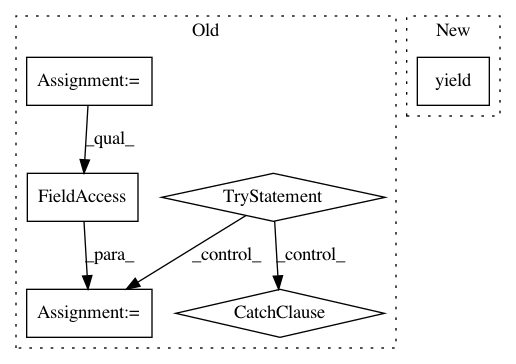

5b2fa49f9ee24bd079ab0c8d5373a3bfcfcc60b4,tensorflow_transform/beam/impl.py,_BatchDoFn,process,#_BatchDoFn#Any#,95
Before Change
self._cached = []
def process(self, element):
try:
element = element.element
except AttributeError:
pass
self._cached.append(element)
if len(self._cached) >= self._batch_size:
yield self._cached
self._cached = []
After Change
def process(self, element):
self._batch.append(element)
if len(self._batch) >= self._desired_batch_size:
yield self._flush_batch()
def finish_bundle(self):
if self._batch:
yield self._flush_batch()
In pattern: SUPERPATTERN
Frequency: 3
Non-data size: 6
Instances
Project Name: tensorflow/transform
Commit Name: 5b2fa49f9ee24bd079ab0c8d5373a3bfcfcc60b4
Time: 2017-03-07
Author: no-reply@google.com
File Name: tensorflow_transform/beam/impl.py
Class Name: _BatchDoFn
Method Name: process
Project Name: tensorflow/tensorboard
Commit Name: db8880132ac2ccd1bd10973c7cea9dde884a3093
Time: 2020-01-28
Author: nfelt@users.noreply.github.com
File Name: tensorboard/backend/event_processing/event_file_loader.py
Class Name: RawEventFileLoader
Method Name: Load
Project Name: streamlit/streamlit
Commit Name: c26f8827854295228a774c928b307224ad128e2d
Time: 2018-06-18
Author: armando@playground.global
File Name: lib/streamlit/proxy/ClientWebSocket.py
Class Name: ClientWebSocket
Method Name: on_message